Vectors in $\mathbb{R}^n$
Vector Basics
Thus far, we have only looked at vectors in the context of solution vectors of a linear system. However, vectors have a much greater context and have many useful applications in fields like engineering, physics, and mathematics itself.
vector
A (Euclidean) vector is a quantity that has only two components: magnitude (length) and direction.

The magnitude is given by the distance between the head (arrowhead) and tail of the vector, and the direction of the vector is determined by the arrowhead.
We can interpret vectors in three different ways:
- Geometric representation - Physically in space (as in Example 2.1.1)
-
Coordinate representation - As a coordinate vector, say $\vec{x}=\begin{bmatrix}
x_0\\y_0
\end{bmatrix}$. This gives explicit information about a vector—we can use
the coordinates to determine the geometric representation of the vector:
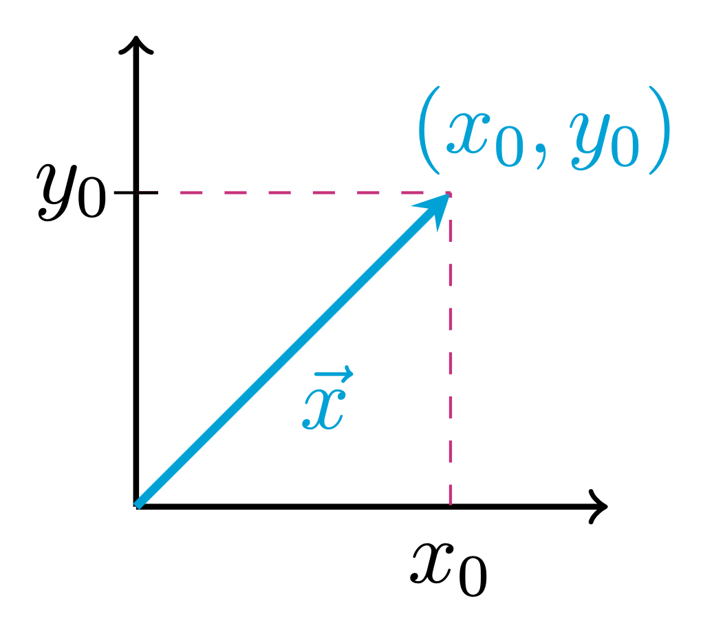
We obtain a vector in space by drawing a segment from the origin (tail) to the point given by the vector coordinates (head). We can also interpret this coordinate vector in the form $(x_0,y_0)$ or as a row vector $\begin{bmatrix}x_0&y_0\end{bmatrix}$. However, in most cases we will stick to column vectors.
- Abstract representation - As some object, say, $\vec{v}$ which has certain properties. e.g. we may know that $\vec{v}$ has length $1$, but we may not know its direction, or coordinates. The abstract representation is also useful when solving problems algebraically, if we want to simplify notation.
It is important to be able to go between these different interpretations of vectors when solving problems. Viewing vectors geometrically may help you solve a geometric problem, while viewing vectors in coordinates or in abstract representation may be sufficient for solving algebraic problems.
The vector space $\mathbb{R}^n$
For any positive integer $n$, we denote the set of vectors with $n$ real number coordinates by $\mathbb{R}^n$: $$\mathbb{R}^n=\left\{\begin{bmatrix} x_1\\x_2\\\vdots\\x_n \end{bmatrix}\ \Bigg|\ x_1, x_2, \dots, x_n\in\mathbb{R}\right\}.$$
We may later refer to $\mathbb{R}^n$ as euclidean space once we have a better understanding of what a vector space is, but for now, we won't worry about that language.
We call $\mathbb{R}^n$ a vector space because we can perform two operations on vectors in $\mathbb{R}^n$ to obtain new vectors in $\mathbb{R}^n$ and these operations have a lot of nice algebraic properties:
- vector addition$$\begin{bmatrix} x_1\\x_2\\\vdots\\x_n \end{bmatrix}+\begin{bmatrix} y_1\\y_2\\\vdots\\y_n \end{bmatrix}=\begin{bmatrix} x_1+y_1\\x_2+y_2\\\vdots\\x_n+y_n \end{bmatrix}$$
- scalar multiplication$$k\begin{bmatrix} x_1\\x_2\\\vdots\\x_n \end{bmatrix}=\begin{bmatrix} kx_1\\kx_2\\\vdots\\kx_n \end{bmatrix}$$
Fundamental algebraic properties of $\mathbb{R}^n$
For any vectors $\vec{u}, \vec{v}, \vec{w}\in\mathbb{R}^n$ and scalars $k,m\in\mathbb{R}$, the following properties hold
- $\vec{u}+\vec{v}=\vec{v}+\vec{u}$
- (commutativity of vector addition)
- $(\vec{u}+\vec{v})+\vec{w}=\vec{u}+(\vec{v}+\vec{w})$
- (associativity of vector addition)
- $\vec{u}+\vec{0}=\vec{u}$, where $\vec{0}$ is the zero
vector, whose coordinates are all $0$ - (existence of zero vector)
- $\vec{u}+(-\vec{u})=\vec{0}$
- (existence of additive inverse)
- $k(\vec{u}+\vec{v})=k\vec{u}+k\vec{v}$
- (distributive with respect to vector addition)
- $(k+m)\vec{u}=k\vec{u}+m\vec{u}$
- (distributive with respect to scalar addition)
- $k(m\vec{u})=(km)\vec{u}$
- (associativity of scalar multiplication)
- $1\vec{u}=\vec{u}$
- (existence of scalar multiplicative identity)
Additional properties of vectors in $\mathbb{R}^n$
These additional properties follow from the fundamental algebraic properties of $\mathbb{R}^n$. For any $\vec{u}\in \mathbb{R}^n$ and $k\in\mathbb{R}$, we have:
- $0\vec{u}=\vec{0}$
- $k\vec{0}=\vec{0}$
- $(-1)\vec{u}=-\vec{u}$
Geometric interpretation of vector operations
To add two vectors together geometrically: what is the net displacement of moving first through $\vec{u}$ and then through $\vec{v}$?
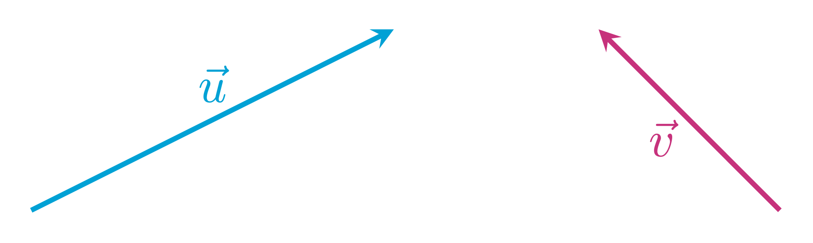Vector addition satisfies the following parallelogram rule:
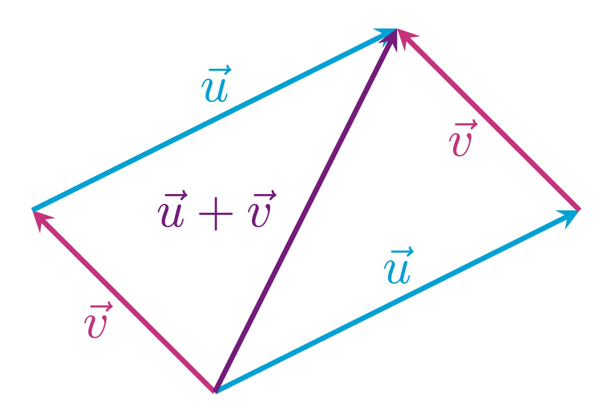On the other hand, scalar multiplication works as you would expect:
Scaling $\vec{u}$ by factor $\frac{1}{3}$ results in a vector in the same direction as $\vec{u}$ but with one-third the length of $\vec{u}$:
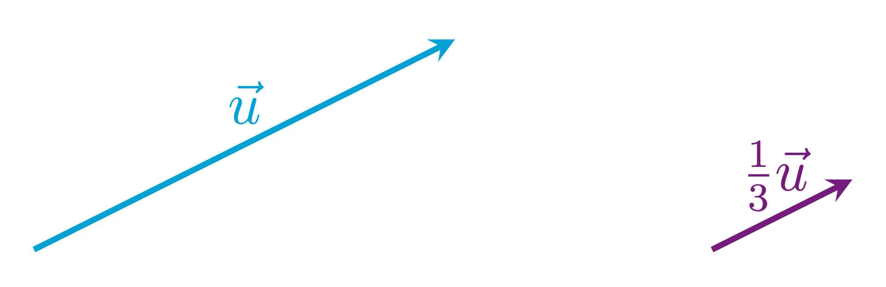Scaling $\vec{v}$ by factor $-2$ results in a vector in the opposite direction of $\vec{v}$ but with double the length of $\vec{v}$:
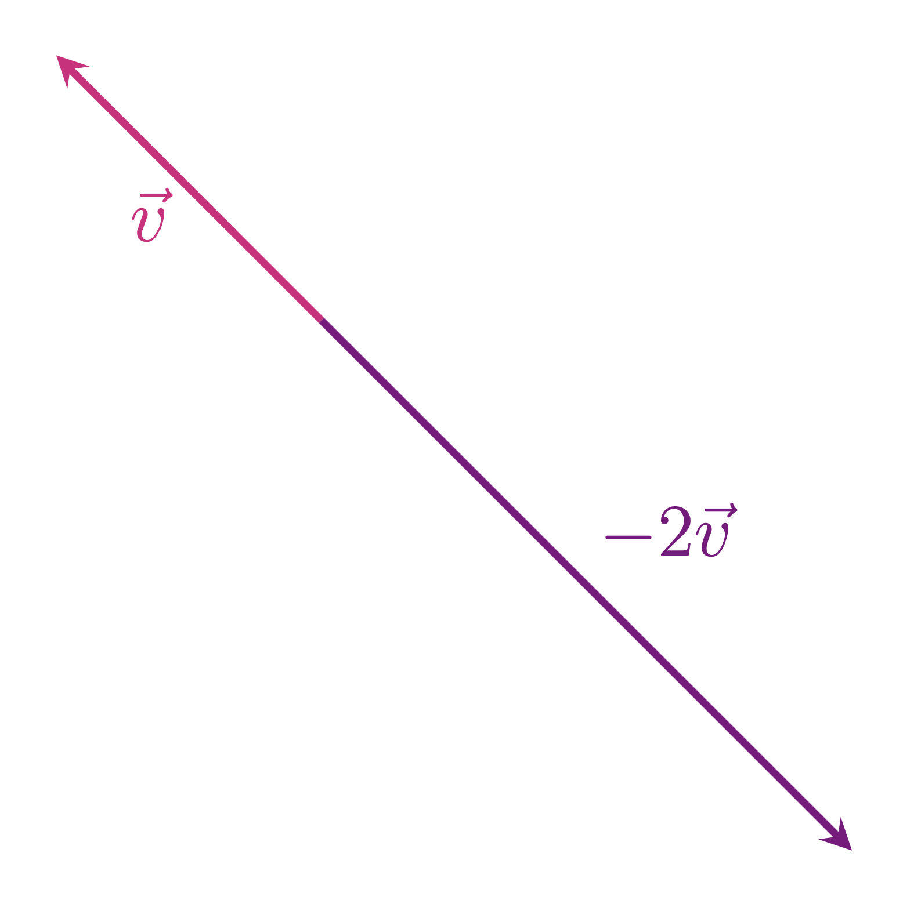Linear Combinations
linear combination
We define a linear combination of vectors $\vec{v}_1, \vec{v}_2, \dots, \vec{v}_k\in\mathbb{R}^n$ to be any vector of the form: $$c_1\vec{v}_1+c_2\vec{v}_2+\cdots+c_k\vec{v}_k$$ where $c_1, c_2, \dots, c_k\in\mathbb{R}$.
So a linear combination of vectors is really just any vector that we can obtain by performing our linear operations (addition and scalar multiplication) on other vectors. It is the general way that we describe how to construct new vectors from any given set of vectors.
The vector $\vec{v}=\begin{bmatrix} 3\\-2 \end{bmatrix}$ is a linear combination of $\vec{e_1}=\begin{bmatrix} 1\\0 \end{bmatrix}$ and $\vec{e_2}=\begin{bmatrix} 0\\1 \end{bmatrix}$:
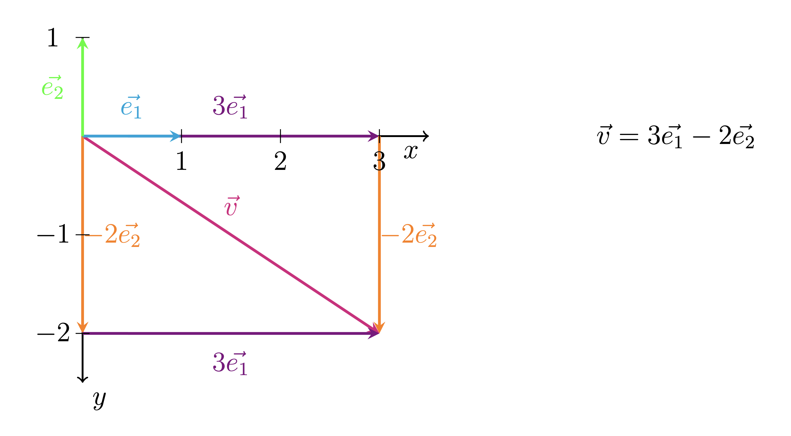Note that the vectors $\vec{e_1}$ and $\vec{e_2}$ determine the standard coordinate axes of $\mathbb{R}^2$. When we first learned how to plot a point such as $(x,y)=(3,2)$ on the standard coordinate plane, we learned to move $3$ units from the origin in the direction of the positive $x$-axis, and then move $-2$ units in the direction of the negative $y$-axis.
Thinking about this in context of vectors in $\mathbb{R}^2$, we obtain the vector $\begin{bmatrix} 3\\-2 \end{bmatrix}$ as a linear combination of $\vec{e_1}$ and $\vec{e_2}$ by first moving $3$ units in the direction of the $\vec{e_1}$ vector and then $-2$ units in the direction of the $\vec{e_2}$ vector.
These $\vec{e_1}$ and $\vec{e_2}$ vectors are very important vectors in the context of linear algebra in $\mathbb{R}^2$.
standard basis vectors of $\mathbb{R}^n$
We call the following vectors $$\vec{e_1}=\begin{bmatrix} 1\\0\\ \vdots\\ 0 \end{bmatrix},\quad \vec{e_2}=\begin{bmatrix} 0\\1\\ \vdots\\ 0 \end{bmatrix}, \quad \dots,\quad \vec{e_n}=\begin{bmatrix} 0\\0\\ \vdots\\ 1 \end{bmatrix},$$ the standard basis vectors of $\mathbb{R}^n$, where $\vec{e_i}$ has a $1$ in the $i$th coordinate and $0$'s elsewhere.
Any vector $\begin{bmatrix} x_1\\x_2\\ \vdots\\ x_n \end{bmatrix}\in\mathbb{R}^n$ can be written uniquely as a linear combination of the standard basis vectors: $$\begin{bmatrix} x_1\\x_2\\ \vdots\\ x_n \end{bmatrix}=x_1\begin{bmatrix} 1\\0\\ \vdots\\ 0 \end{bmatrix}+x_2\begin{bmatrix} 0\\1\\ \vdots\\ 0 \end{bmatrix}+ \cdots+x_n\begin{bmatrix} 0\\0\\ \vdots\\ 1 \end{bmatrix}=x_1\vec{e_1}+x_2\vec{e_2} \cdots+x_n\vec{e_n}.$$
The standard basis for $\mathbb{R}$ is $\set{1}=\set{e_1}$.
The standard basis for $\mathbb{R}^2$ is $\left\{\begin{bmatrix} 1\\0 \end{bmatrix}, \begin{bmatrix} 0\\1 \end{bmatrix}\right\}=\set{\vec{e_1}, \vec{e_2}}$.
The standard basis for $\mathbb{R}^3$ is $\left\{\begin{bmatrix} 1\\0\\0 \end{bmatrix}, \begin{bmatrix} 0\\1\\0 \end{bmatrix}, \begin{bmatrix} 0\\0\\1 \end{bmatrix}\right\}=\set{\vec{e_1}, \vec{e_2},\vec{e_3}}$.
The standard basis for $\mathbb{R}^4$ is $\left\{\begin{bmatrix} 1\\0\\0\\0 \end{bmatrix}, \begin{bmatrix} 0\\1\\0\\0 \end{bmatrix}, \begin{bmatrix} 0\\0\\1\\0 \end{bmatrix}, \begin{bmatrix} 0\\0\\0\\1 \end{bmatrix}\right\}=\{\vec{e_1}, \vec{e_2},\vec{e_3},\vec{e_4}\}$.
In general, when referring to standard basis vectors, it should be clear from context whether we are referring to those vectors in $\mathbb{R}$, $\mathbb{R}^2$, $\mathbb{R}^3$, $\mathbb{R}^n$, etc.
Is $\begin{bmatrix} 3\\0\\11 \end{bmatrix}$ a linear combination of $\begin{bmatrix} 2\\-1\\4 \end{bmatrix}$ and $\begin{bmatrix} 3\\-3\\1 \end{bmatrix}$?
We want to know if we can write $$c_1\begin{bmatrix} 2\\-1\\4 \end{bmatrix}+c_2\begin{bmatrix} 3\\-3\\1 \end{bmatrix}=\begin{bmatrix} 3\\0\\11 \end{bmatrix},$$ for some $c_1,c_2\in\mathbb{R}$. Note that this vector equation gives a system of equations $$\begin{array}{rrl} 2c_1&+3c_2&=3\\ -c_1&-3c_2&=0\\ 4c_1&+c_2&=11 \end{array},$$ with corresponding augemented system $$\left[\begin{array}{cc|c} 2&3&3\\-1&-3&0\\4&1&11 \end{array}\right].$$ To see if we have a solution $\begin{bmatrix} c_1\\c_2 \end{bmatrix}$ to the system, we simply row reduce the system, and obtain $$\left[\begin{array}{cc|c} 1&0&3\\0&1&-1\\0&0&0 \end{array}\right].$$ So we have a solution $\begin{bmatrix} c_1\\c_2 \end{bmatrix}=\begin{bmatrix} 3\\-1 \end{bmatrix}$. To check our solution is correct, we observe $$3\begin{bmatrix} 2\\-1\\4 \end{bmatrix}-\begin{bmatrix} 3\\-3\\1 \end{bmatrix}=\begin{bmatrix} 3\\0\\11 \end{bmatrix},$$ so $\begin{bmatrix} 3\\0\\11 \end{bmatrix}$ is indeed a linear combination of $\begin{bmatrix} 2\\-1\\4 \end{bmatrix}$ and $\begin{bmatrix} 3\\-3\\1 \end{bmatrix}$
Is $\begin{bmatrix} 1\\-2\\-2 \end{bmatrix}$ a linear combination of $\begin{bmatrix} 2\\-1\\4 \end{bmatrix}$ and $\begin{bmatrix} 3\\-3\\1 \end{bmatrix}$?
We can set up a augmented system analogous to that in Example 2.2.3 and try to reduce the system:
Writing the solution to an inhomogeneous system in parametric vector form
Span
span, spanning set
We define the span of the vectors $\vec{v_1}, \vec{v_2}, \dots, \vec{v_k}$ as the set of all possible linear combinations of $\vec{v_1}, \vec{v_2}, \dots, \vec{v_k}$: $$\mathrm{span}\set{\vec{v_1}, \vec{v_2}, \dots, \vec{v_k}}=\set{c_1\vec{v_1}+c_2\vec{v_2}+\cdots+ c_k\vec{v_k}\ |\ c_1, c_2, \dots, c_k\in\mathbb{R}}.$$
If we label $V=\mathrm{span}\set{\vec{v_1}, \vec{v_2}, \dots, \vec{v_k}}$, we say that $\set{\vec{v_1}, \vec{v_2}, \dots, \vec{v_k}}$ spans $V$, or equivalently, $\set{\vec{v_1}, \vec{v_2}, \dots, \vec{v_k}}$ is a spanning set for $V$.
We often call $\mathrm{span}\set{\vec{v_1}, \vec{v_2}, \dots, \vec{v_k}}$ the subspace spanned by $\vec{v_1}, \vec{v_2}, \dots, \vec{v_k}$. Essentially, we can think of a span of vectors as a vector space contained inside of $\mathbb{R}^n$, because we can perform operations on vectors in the span to obtain new vectors within the span. Note that if we sum two linear combinations of $\vec{v_1}, \vec{v_2}, \dots, \vec{v_k}$, we obtain another linear combination of those vectors. Similarly, if we scale a linear combination of $\vec{v_1}, \vec{v_2}, \dots, \vec{v_k}$, we obtain another linear combination of those vectors.
For now, don't think too much about what this subspace terminology means. We will explore this concept in more detail later in the course.
By Example 2.2.3, we know that $\begin{bmatrix} 3\\0\\11 \end{bmatrix}\in\mathrm{span}\left\{\begin{bmatrix} 2\\-1\\4 \end{bmatrix},\begin{bmatrix} 3\\-3\\1 \end{bmatrix}\right\}$, and by Example 2.2.4, $\begin{bmatrix} 1\\-2\\-2 \end{bmatrix}\notin\mathrm{span}\left\{\begin{bmatrix} 2\\-1\\4 \end{bmatrix},\begin{bmatrix} 3\\-3\\1 \end{bmatrix}\right\}$.
However, there are (infinitely) many other vectors in $\mathrm{span}\left\{\begin{bmatrix} 2\\-1\\4 \end{bmatrix},\begin{bmatrix} 3\\-3\\1 \end{bmatrix}\right\}$, such as
We want to know if any vector $\begin{bmatrix} x\\y \end{bmatrix}\in\mathbb{R}^2$ can be written as a linear combination of $\begin{bmatrix} 1\\-1 \end{bmatrix}$, $\begin{bmatrix} -4\\5 \end{bmatrix}$, and $\begin{bmatrix} 3\\-2 \end{bmatrix}$. That is, we want to know if the vector equation \begin{equation} c_1\begin{bmatrix} 1\\-1 \end{bmatrix}+c_2\begin{bmatrix} -4\\5 \end{bmatrix}+c_3\begin{bmatrix} 3\\-2 \end{bmatrix}=\begin{bmatrix} x\\y \end{bmatrix} \end{equation} has a solution $\begin{bmatrix} c_1\\c_2\\c_3 \end{bmatrix}$, regardless of the value of $x$ and $y$.
We can row reduce the corresponding augmented system to determine if we always have a solution:
So we have that $\begin{bmatrix} c_1\\c_2\\c_3 \end{bmatrix}=\begin{bmatrix} 5x+4y-7c_3\\x+y-c_3\\c_3 \end{bmatrix}$ is a solution, where $c_3$ is a free variable, and so any $\begin{bmatrix} x\\y \end{bmatrix}\in\mathbb{R}^2$ can be written as the following linear combination $$\begin{bmatrix} x\\y \end{bmatrix}=(5x+4y-7c_3)\begin{bmatrix} 1\\-1 \end{bmatrix}+(x+y-c_3)\begin{bmatrix} -4\\5 \end{bmatrix}+c_3\begin{bmatrix} 3\\-2 \end{bmatrix}.$$
Therefore, $S=\left\{\begin{bmatrix} 1\\-1 \end{bmatrix}, \begin{bmatrix} -4\\5 \end{bmatrix}, \begin{bmatrix} 3\\-2 \end{bmatrix}\right\}$ is a spanning set for $\mathbb{R}^2$.
If we tried to find a solution to the equation \begin{equation} c_1\begin{bmatrix} 2\\-1 \end{bmatrix}+c_2\begin{bmatrix} -4\\2 \end{bmatrix}=\begin{bmatrix} x\\y \end{bmatrix} \end{equation} we would see that after row reducing the corresponding augmented system, we obtain
So we see that we only have a solution to the system if $x+2y=0$, or equivalently, if $x=-2y$. This gives a restriction for vectors in $\mathrm{span}\left\{\begin{bmatrix} 2\\-1 \end{bmatrix}, \begin{bmatrix} -4\\2 \end{bmatrix}\right\}$, so $\mathrm{span}\left\{\begin{bmatrix} 2\\-1 \end{bmatrix}, \begin{bmatrix} -4\\2 \end{bmatrix}\right\}\neq \mathbb{R}^2$. The only vectors in $\mathrm{span}\left\{\begin{bmatrix} 2\\-1 \end{bmatrix}, \begin{bmatrix} -4\\2 \end{bmatrix}\right\}$ are vectors of the form $\begin{bmatrix} x\\y \end{bmatrix}=\begin{bmatrix} -2t\\t \end{bmatrix}$.
To geometrically interpret why $C=\left\{\begin{bmatrix} 2\\-1 \end{bmatrix}, \begin{bmatrix} -4\\2 \end{bmatrix}\right\}$ isn't a spanning set for $\mathbb{R}^2$, consider the following graph:
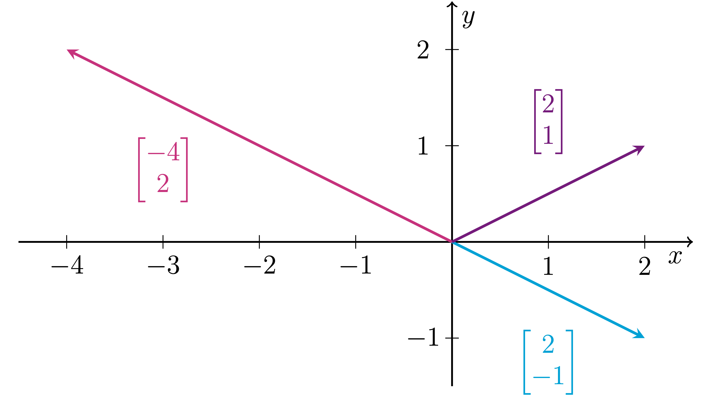
We see that both $\begin{bmatrix} 2\\-1 \end{bmatrix}$ and $\begin{bmatrix} -4\\2 \end{bmatrix}$ actually lie on the same line, so any vector in $\mathrm{span}\left\{\begin{bmatrix} 2\\-1 \end{bmatrix}, \begin{bmatrix} -4\\2 \end{bmatrix}\right\}$ also lies on this same line, because if we linearly combine $\begin{bmatrix} 2\\-1 \end{bmatrix}$ and $\begin{bmatrix} -4\\2 \end{bmatrix}$ in any way, we just get another vector on that line.
So we see there's no way to obtain a vector like $\begin{bmatrix} 2\\1 \end{bmatrix}$ in the given span, because it does not lie on the determined line.
Writing the solution set to a homogeneous system as a span of vectors
Linear Independence
Consider the standard basis for $\mathbb{R}^2$: $S=\set{\begin{bmatrix} 1\\0 \end{bmatrix}, \begin{bmatrix} 0\\1 \end{bmatrix}}=\set{\vec{e_1},\vec{e_2}}$. We know that $S$ is a spanning set for $\mathbb{R}^2$ because any vector can be written as a linear combination of the vectors in $S$. But the reason why we call this a basis for $\mathbb{R}^2$ is because any vector $\begin{bmatrix} x\\y \end{bmatrix}\in\mathbb{R}^2$ can in fact be written uniquely as a linear combination of $\vec{e_1}=\begin{bmatrix} 1\\0 \end{bmatrix}$ and $\vec{e_2}=\begin{bmatrix} 0\\1 \end{bmatrix}$:
\begin{equation} \begin{bmatrix} x \\y \end{bmatrix}=x\begin{bmatrix} 1\\0 \end{bmatrix}+y\begin{bmatrix} 0\\1 \end{bmatrix}=x\vec{e_1}+y\vec{e_2}. \end{equation}That is, the only way to write $\begin{bmatrix} x\\y \end{bmatrix}$ as a linear combination of $\vec{e_1}$ and $\vec{e_2}$ is by choosing $x$ to be the coefficient of $\vec{e_1}$ and $y$ to be the coefficient of $\vec{e_2}$ in the linear combination.
One way we can think about what the coefficients of $\vec{e_1}$ and $\vec{e_2}$ in the equation (2.3) mean: the standard basis vectors essentially determine the standard coordinate axes on the plane. That is, we determine the unique coordinates of $\begin{bmatrix} x\\y \end{bmatrix}$ relative to the standard coordinate axes by moving $x$ units in the direction of $\vec{e_1}$ and then moving $y$ units in the direction of $\vec{e_2}$.
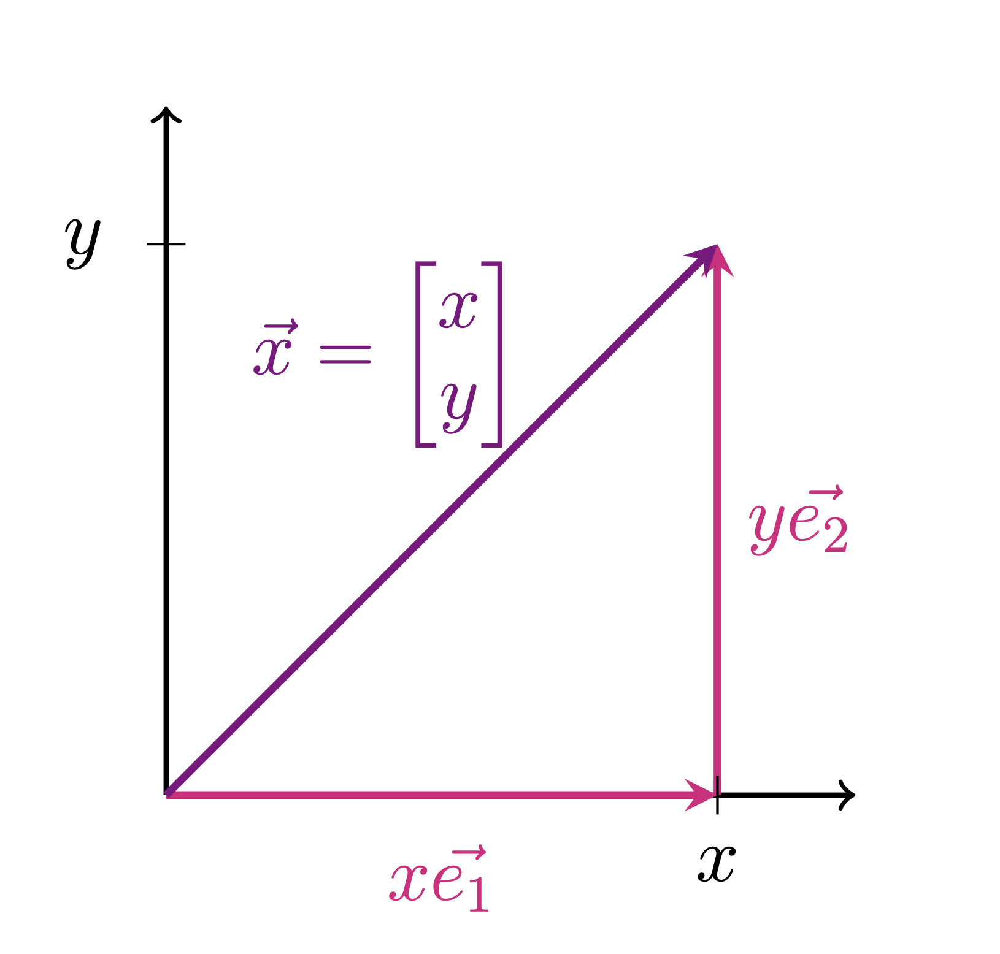In general, we would like a unique way to choose coordinates relative to coordinate axes.
On the other hand, let's now consider $S'=\left\{\begin{bmatrix} 1\\0 \end{bmatrix}, \begin{bmatrix} 0\\1 \end{bmatrix}, \begin{bmatrix} 1\\1 \end{bmatrix}\right\}=\set{\vec{e_1},\vec{e_2},\vec{e}}$ which is also a spanning set for $\mathbb{R}^2$. However, note that any vector $\begin{bmatrix} x\\y \end{bmatrix}\in\mathbb{R}^2$ can be written as a linear combination of the vectors in $S'$ in infinitely many ways. So if we determined a third axis in $\mathbb{R}^2$ by the vector $\vec{e}$, say, the $w$-axis, there would not be a unique way to choose coordinates for our vectors relative these three axes:
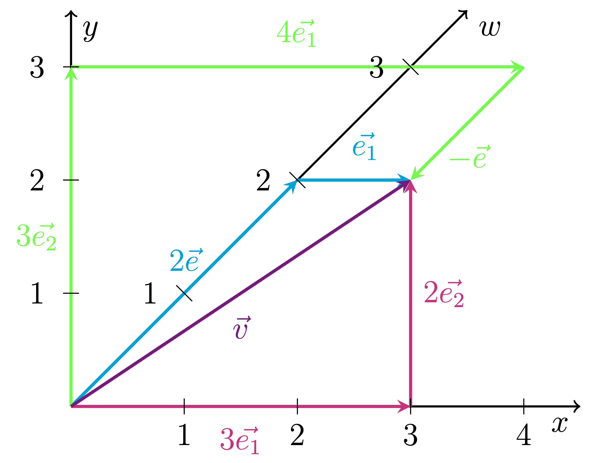Taking $\vec{v}=\begin{bmatrix} 3\\2 \end{bmatrix}$ in standard coordinates, we see that
\begin{align*} \vec{v} & =3\vec{e_1}+2\vec{e_2}, \\ \vec{v} & =2\vec{e}+\vec{e_1}, \\ \vec{v} & =3\vec{e_2}+4\vec{e_1}-\vec{e}. \end{align*}So $S'$ essentially has redundant information as a spanning set. So there's no point of constructing a third $w$-axis in $\mathbb{R}^2$, because we can already obtain any vector in $\mathbb{R}^2$ relative to the $x$ and $y$ axes.
Ideally, we always want to work with spanning sets for $\mathbb{R}^n$ that give us a unique way to represent any vector in the space. How can we guarantee that a spanning set will give a unique representation of any vector? The reason that $S$ gives us a unique way to represent any vector in $\mathbb{R}^2$ is because it is a linearly independent set.
linearly independent
A set of vectors $S=\set{\vec{v_1}, \vec{v_2}, \dots, \vec{v_k}}$ is linearly independent if none of the vectors in the set can be written as a linear combination of the others.
If at least one vector in $S$ can be written as a linear combination of the others, we say that $S$ is linearly dependent.
Can we write
Note that all three systems above have no solution, so the set $S$ is linearly independent.
Now, we see it can be a bit inefficient to determine if a set is linearly independent by testing if each vector is a linear combination of the others. If we have a set with, say, 20 vectors in $\mathbb{R}^{35}$, we wouldn't even want to make a computer solve 20 different systems to determine linear independence of the set. Thankfully, we have a more useful definition that allows us to answer the question of linear independence by solving one system of equations:
Equivalent definition of linearly independent
A set of vectors $S=\set{\vec{v_1}, \vec{v_2}, \dots, \vec{v_k}}$ is linearly independent if the only solution to the following homogeneous vector equation \begin{equation}\label{eq:linindep} c_1\vec{v_1}+c_2\vec{v_2}+\cdots+c_k\vec{v_k}=\vec{0} \end{equation} is $c_1=c_2=\cdots=c_k=0$.
If ($\ref{eq:linindep}$) has a non-trivial solution such that not all $c_i=0$, then $S$ is linearly dependent.
We will next prove that the definition of linear independent in Theorem 2.4.1 is equivalent to Definition 2.4.1.
Proof. Let $S=\set{\vec{v_1}, \vec{v_2}, \dots, \vec{v_k}}\subset \mathbb{R}^n$ and suppose that none of the vectors in $S$ can be written as a linear combination of the other vectors in $S$.
Then consider the equation \begin{equation}\label{eq:linindep0} c_1\vec{v_1}+c_2\vec{v_2}+\cdots+c_k\vec{v_k}=\vec{0}. \end{equation} We want to show that this equation has \textit{only} the trivial solution $c_1=c_2=\cdots=c_k=0$.
Assume on the contrary that the above equation has a non-trivial solution such that, $c_1\neq0$. Then we could rearrange equation ($\ref{eq:linindep0}$) in the following way: \begin{equation}\label{eq:linindep1} c_2\vec{v_2}+c_3\vec{v_3}+\cdots+c_k\vec{v_k}=-c_1\vec{v_1}. \end{equation} and then we can divide equation ($\ref{eq:linindep1}$) by $-c_1$, since $c_1\neq 0$, and we obtain \begin{equation} -\frac{c_2}{c_1}\vec{v_2}-\frac{c_3}{c_1}\vec{v_3}-\cdots-\frac{c_{k}}{c_1}\vec{v_k}=\vec{v_1}. \end{equation} and so we can write $\vec{v_1}$ as a linear combinations of the other vectors in the set $\vec{v_2}, \vec{v_3}, \dots, \vec{v_k}$. But this contradicts the fact that none of the vectors in $S$ can be written as a linear combination of the other vectors in $S$. So our assumption that equation ($\ref{eq:linindep0}$) had a non-trivial solution in which $c_1\neq 0$ led to a contradiction, and so it must be that equation ($\ref{eq:linindep0}$) cannot have a solution in which $c_1\neq 0$. By a similar argument, equation (2.5) cannot have a solution in which $c_2, c_3, \dots, c_k\neq 0$, and so it must be that equation ($\ref{eq:linindep0}$) has only the trivial solution.
Thus, we can conclude that if none of the vectors in $S$ can be written as a linear combination of the other vectors in $S$, then equation ($\ref{eq:linindep0}$) has only the trivial solution.
Conversely, suppose the following equation \begin{equation}\label{eq:linindep00} c_1\vec{v_1}+c_2\vec{v_2}+\cdots+c_k\vec{v_k}=\vec{0}. \end{equation} has only the trivial solution $c_1=c_2=\cdots=c_k=0$. Then the equivalent equation \begin{equation}\label{eq:linindep11} c_2\vec{v_2}+c_3\vec{v_3}+\cdots+c_k\vec{v_k}=-c_1\vec{v_1}. \end{equation} must only have the trivial solution $c_1=c_2=\cdots=c_k=0$. However, if we \textit{could} write $\vec{v_1}$ as a linear combination of the other vectors in the set, then equation ($\ref{eq:linindep11}$) would have a solution such that $c_1=-1\neq 0$, since we don't have such a solution, then $\vec{v_1}$ cannot be written as a linear combination of the other vectors in $S$.
By a similar argument, each vector $\vec{v_2}, \vec{v_3}, \dots, \vec{v_k}$ cannot be written as a linear combination of the other vectors in $S$.
Thus, we can conclude that if equation ($\ref{eq:linindep00}$) has only the trivial solution, then none of the vectors in $S$ can be written as a linear combination of the other vectors in $S$.
So the definition in Theorem 2.4.1 is indeed equivalent to Definition 2.4.1. From now on, we will more often use the definition of Theorem 2.4.1 to answer questions of linear independence. $$\tag*{$\square$}$$
We want to know all solutions to the equation \begin{equation} c_1\begin{bmatrix} 0\\1\\1 \end{bmatrix}+c_2\begin{bmatrix} 1\\0\\1 \end{bmatrix}+c_3\begin{bmatrix} 1\\1\\0 \end{bmatrix}=\begin{bmatrix} 0\\0\\0 \end{bmatrix}. \end{equation}
We can determine the solutions by solving the corresponding augmented homogeneous system. After row reducing, we obtain: $$\left[\begin{array}{ccc|c} 0&1&1&0\\ 1&0&1&0\\ 1&1&0&0 \end{array}\right]\quad \sim\quad\left[\begin{array}{ccc|c} 1&0&0&0\\ 0&1&0&0\\ 0&0&1&0 \end{array}\right].$$
So we have a unique solution $c_1=c_2=c_3=0$, and so $S=\left\{\begin{bmatrix} 0\\1\\1 \end{bmatrix}, \begin{bmatrix} 1\\0\\1 \end{bmatrix}, \begin{bmatrix} 1\\1\\0 \end{bmatrix}\right\}$ is linearly independent.
To find the solutions to \begin{equation} c_1\begin{bmatrix} -5\\2\\1 \end{bmatrix}+c_2\begin{bmatrix} 7\\-4\\2 \end{bmatrix}+c_3\begin{bmatrix} -1\\-2\\7 \end{bmatrix}=\begin{bmatrix} 0\\0\\0 \end{bmatrix} \end{equation} we solve the corresponding homogeneous system: $$\left[\begin{array}{ccc|c} -5&7&-1&0\\ 2&-4&-2&0\\ 1&2&7&0 \end{array}\right] \quad \sim \quad \left[\begin{array}{ccc|c} 1&0&3&0\\ 0&1&2&0\\ 0&0&0&0 \end{array}\right].$$
So our solution set is given by $$\left\{\begin{bmatrix} c_1\\c_2\\c_3 \end{bmatrix}=\begin{bmatrix} -3c_3\\-2c_3\\c_3 \end{bmatrix}\ \Bigg|\ c_3\in\mathbb{R}\right\},$$ and so the system has infinitely many solutions, and hence, $S'$ is linearly dependent.
Note further that the reduced row-echelon form of the system actually tells us precisely how the vector $\begin{bmatrix} -1\\-2\\7 \end{bmatrix}$ can be written as a linear combination of $\begin{bmatrix} -5\\2\\1 \end{bmatrix}$ and $\begin{bmatrix} 7\\-4\\2 \end{bmatrix}$. The entry in each row of the column without a leading one in the RREF corresponds to the coefficient of the column with a leading one in that same row in the linear combination. So we have $$\begin{bmatrix} -1\\-2\\5 \end{bmatrix}=3\begin{bmatrix} -5\\2\\1 \end{bmatrix}+2\begin{bmatrix} 7\\-4\\2 \end{bmatrix}.$$
Linear independence/dependence of a set containing $2$ vectors
Note that $I$ is a linearly independent set while $D$ is a linearly dependent set. We see that in the particular case in which we have only two vectors in a set, determining this is much simpler than solving an augmented homogeneous system. We see that the vectors in $D$ are multiples of one another: $$\begin{bmatrix} -2\\4 \end{bmatrix}=-2\begin{bmatrix} 1\\-2 \end{bmatrix},$$ and hence, $D$ is clearly linearly dependent.
On the other hand, the vectors in $I$ are not multiples of one another, and hence, $I$ is linearly independent.
The difference in linear independence/dependence of a set of two vectors also has a simple geometric interpretation:
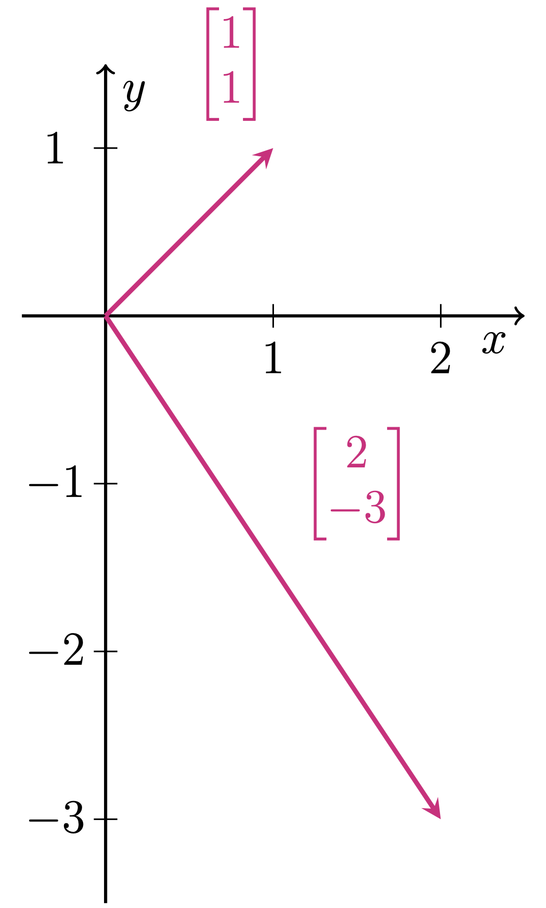
On the coordinate plane above, we see that linear independence of $\begin{bmatrix} 1\\1 \end{bmatrix}$ and $\begin{bmatrix} 2\\-3 \end{bmatrix}$ can be interpreted as these two vectors lying on two different (independent) lines through the origin.
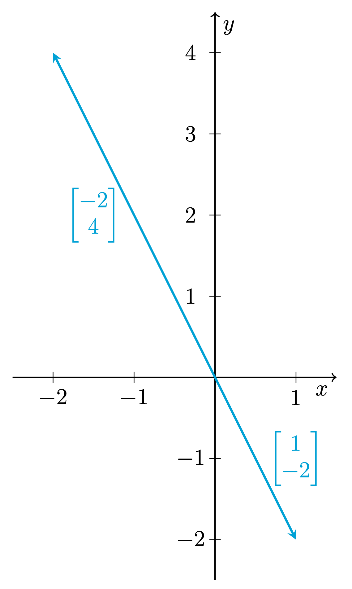
On the coordinate plane above, we see that linear dependence of $\begin{bmatrix} 1\\-2 \end{bmatrix}$ and $\begin{bmatrix} -2\\4 \end{bmatrix}$ can be interpreted as these two vectors lying on the same (dependent) line through the origin.
Main Theorems of Linear Algebra
The concepts of span and linear independence are two very core ideas in linear algebra.
We see that linearly independence corresponds to the idea of systems having a unique solution, while span corresponds to the idea of systems always being consistent. The following theorems formalize these two ideas:
Main theorems of linear independence
Suppose $A$ is an matrix with $m$ rows and $n$ columns, and let $\vec{a_1}, \vec{a_2}, \dots, \vec{a_n}\in\mathbb{R}^m$ be the columns of $A$.
The following are equivalent:
- $\set{\vec{a_1}, \vec{a_2}, \dots, \vec{a_n}}$ is linearly independent.
- Any $\vec{b}\in\mathrm{span}\set{\vec{a_1}, \vec{a_2}, \dots, \vec{a_n}}$ can be written uniquely as a linear combination of $\vec{a_1}, \vec{a_2}, \dots, \vec{a_n}$.
- The augmented homogeneous system $[A|\vec{0}]$ has only the trivial solution $\vec{x}=\vec{0}$.
- The augmented inhomogeneous system $[A|\vec{b}]$ has a unique solution, for any $\vec{b}\in \mathbb{R}^m$ in which the system is consistent.
- $\mathrm{RREF}(A)$ has a leading $1$ in every column.
- Any row-echelon form of $A$ has a leading entry in every column.
Main theorems of span
Suppose $A$ is an matrix with $m$ rows and $n$ columns, and let $\vec{a_1}, \vec{a_2}, \dots, \vec{a_n}\in\mathbb{R}^m$ be the columns of $A$.
The following are equivalent:
- $\mathrm{span}\set{ \vec{a_1}, \vec{a_2}, \dots, \vec{a_n}}=\mathbb{R}^m$.
- Any $\vec{b}\in\mathbb{R}^m$ can be written as a linear combination of $\vec{a_1}, \vec{a_2}, \dots, \vec{a_n}$.
- The augmented inhomogeneous system $[A|\vec{b}]$ is always consistent, for any $\vec{b}\in\mathbb{R}^m$.
- $\mathrm{RREF}(A)$ has a leading $1$ in every row.
- Any row-echelon form of $A$ has a leading entry in every row.
Ideally, we would like to work with systems that are both always consistent and containing a unique solution.
If we look at the particular case in which $A$ as above is square ($n=m$), then all of the above statements in Theorem 2.5.1 and Theorem 2.5.2 are equivalent. In this special case, we call the columns $\vec{a_1}, \vec{a_2}, \dots, \vec{a_n}$ of $A$ a basis for $\mathbb{R}^n$.
Bases and Dimension
Before we begin this section, some quick terminology:
Recall that a subspace $W$ of $\mathbb{R}^n$ can be thought of as the span of a set of vectors contained in $\mathbb{R}^n$. We call $W$ a subspace because we can think of it as a vector space itself that is contained in the (potentially) larger space $\mathbb{R}^n$.
We define a subset $S$ of $\mathbb{R}^n$ to be a set of vectors that are contained in $\mathbb{R}^n$, denoted $S\subset \mathbb{R}^n$. A subset is not necessarily a subspace, as a subset may not have any algebraic structure—it could be just a random collection of a few vectors.
Basis for a subspace of $\mathbb{R}^n$
Let $W$ be any subspace of $\mathbb{R}^n$ (or possibly $\mathbb{R}^n$ itself) and suppose that $B=\set{\vec{v_1}, \vec{v_2},\dots ,\vec{v_k}}$ is a subset of $W$. We say that $B$ is a basis for $W$ if
- $B$ is linearly independent, and
- $\mathrm{span}\set{\vec{v_1}, \vec{v_2},\dots ,\vec{v_k}}=W$.
In the particular case that $W=\mathbb{R}^n$, we have that $B=\set{\vec{v_1}, \vec{v_2},\dots ,\vec{v_n}}$ is a basis for $\mathbb{R}^n$ if $B$ is linearly independent and $\mathrm{span}(B)=\mathbb{R}^n$.
Bases are important in linear algebra because they allow us to represent an entire vector space in terms of finitely many vectors— since a basis spans the entire space, we can write any vector in the space as a linear combination of a basis, and since a basis is linearly independent, we know that a basis doesn't have any redundant unnecessary vectors.
One thing you may notice about bases for $\mathbb{R}^n$: it seems that the number of vectors in any basis is $n$. Is this going to be true in general? This question motivates the following definition:
dimension
If $W$ is any subspace of $\mathbb{R}^n$, we define the dimension of $W$, denoted $\dim(W)$, as the number of vectors in any basis for $W$.
It may seem silly that we define dimension in this way—why don't we just define the dimension of $\mathbb{R}^n$ to be $n$? As we see, in the case of specific subspaces of $\mathbb{R}^n$, it is sometimes important to understand how to quantify its dimension. Later in the course, we will also work with vector spaces that don't look like $\mathbb{R}^n$, and the dimension of these spaces will not always be clear immediately. In those future cases, we will find that determining dimension requires us to construct a basis for the space.
Now, we want to ensure that dimension is well-defined, and the definition of dimension may have you asking: is it not possible to obtain a basis for $\mathbb{R}^n$ containing say $k$ vectors, where $k\neq n$? The following theorem will tell us that indeed any basis of $\mathbb{R}^n$ must have the same number of vectors, and hence, dimension is well defined:
Let $W$ be an $m$-dimensional subspace of $\mathbb{R}^n$ and suppose that $C=\set{\vec{v_1}, \dots, \vec{v_k}}$ be a subset of $W$.
- If $k>m$, then $C$ is linearly dependent.
- If $k<m$, then $C$ does not span $W$
The above theorem tells us that the only way that we could possibly have $C$ be both linearly independent and also span all of $W$, we must have $k=m$. In other words, the only way that $C$ could possibly be a basis for an $m$-dimensional subspace $W$, is if $C$ contains $m$ vectors (but conversely, if a set of vectors in $W$ contains $m$ vectors, it is not necessarily a basis for $W$).
This theorem shows that in the particular case of $\mathbb{R}^n$, that any set containing more than $n$ vectors in $\mathbb{R}^n$ cannot be linearly independent, and any set containing less than $n$ vectors in $\mathbb{R}^n$ cannot span $\mathbb{R}^n$.
Now, Theorem 2.6.1 may have you asking: well if I have a linearly independent set of $m$ vectors in an $m$-dimensional subspace $W$ of $\mathbb{R}^n$, will this also be a spanning set? What about the converse?
To wrap up this discussion, we have the following theorem which gives equivalent definitions of a basis for any subspace of $\mathbb{R}^n$:
Suppose $W$ is an $m$-dimensional subspace of $\mathbb{R}^m$ and that $B=\set{\vec{v_1}, \vec{v_2}, \dots, \vec{v_m}}$ is a subset of $W$ containing $m$ vectors. The following are equivalent:
- $B$ is a basis for $W$.
- $B$ is linearly independent.
- $B$ is a spanning set for $W$.
This theorem tells us that if we have a set of $m$ vectors in $W$, all we need to do to determine if it is a basis for $W$ is either determine that it is linearly independent or determine that it is a spanning set for $W$. Both of these properties immediately imply the other when we have the correct number of vectors in a set. So knowing that the dimension of $W$ is $m$ allows us to know precisely how many vectors we would need to possibly have a basis.